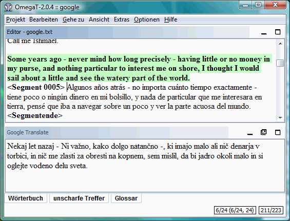

Google Translate
Google Translate è il servizio offerto da Google per tradurre frasi, siti web e testi completi attraverso un numero sempre crescente di lingue a disposizione. Al momento della compilazione di questa guida, l'elenco comprende più di 50 lingue, dall'Albanese allo Yiddish, incluse, ovviamente, tutte le lingue principali (si consulti Lingue disponibili per le traduzioni). La traduzione è prodotta da una tecnologia all'avanguardia, senza l'intervento di traduttori umani. Il gruppo di ricerca di Google ha sviluppato un proprio sistema di traduzione statistica per le coppie linguistiche, ora disponibile in Google Translate. A differenza delle memorie di traduzione generate dall'utente, da un lato, (come nel caso di OmegaT) o di sistemi basati su regole (che si trovano in genere sotto il nome di "traduzione automatica", o TA in breve) Google segue un approccio diverso: hanno alimentato il sistema con miliardi di parole, sia da testo monolingue nella lingua di destinazione, sia da testo allineato composto da esempi di traduzioni umane tra le lingue. Le tecniche di apprendimento statistico vengono poi applicate per costruire un modello di traduzione, raggiungendo risultati molto buoni nelle valutazioni di ricerca.
La qualità della traduzione dipende, naturalmente, da una parte dalla quantità presente di testi di destinazione e dalla disponibilità di una loro versione bilingue, dall'altro dalla qualità dei modelli costruiti. È assolutamente certo che, mentre può essere insufficiente in alcuni casi, la qualità andrà decisamente a migliorare col tempo, e non peggiorare. Tuttavia, anche il software più sofisticato presente oggi sul mercato non si avvicina alla fluidità di un parlante madrelingua o possiede l'abilità di un traduttore professionista. La traduzione automatizzata è molto difficile, a causa del contesto (come esempio conosciuto si prenda la frase "Una vecchia legge la regola"), e passerà diverso tempo prima di ottenere traduzioni di qualità umana.
L'utente di OmegaT non è obbligato a usare Google Translate. Se viene utilizzato, non saranno rese disponibili a Google né la decisione dell'utente di accettare la traduzione, né la traduzione finale. La finestra seguente mostra un esempio di traduzione Google Translate di a) testo originale inglese b) spagnolo e c) sloveno.

La traduzione spagnola è migliore di quella slovena. Si notino i verbi interesar e navegar in Spagnolo, che traducono correttamente i verbi interest e sail. Nella versione slovena entrambe le parole sono state tradotte come sostantivi. Ricordare, tuttavia, che la differenza è solo dovuta al fatto che esiste più materiale bilingue disponibile per la lingua spagnola che per quella slovena.
Come usare Google Translate in OmegaT
Per attivarlo, spuntare la voce di menu Google Translate nelle Opzioni. Se si usa per la prima volta, si deve eseguire "Ripristina finestra principale" - ultima voce di menu nelle Opzioni. Se il pannello Google Translate non è aperto, fare clic su "Google Translate" nella riga inferiore della finestra per aprirlo. Regolare nella posizione preferita.
Da questo momento in poi apparirà un suggerimento di traduzione nel pannello Google Translate per ogni nuovo segmento di partenza aperto. Se la traduzione è accettabile, premere Ctrl+M per sostituire il testo di destinazione del segmento aperto. Nel segmento qui sopra, per esempio, Ctrl+M sovrascrive la versione spagnola con il suggerimento sloveno.
Se non si desidera che OmegaT invii i segmenti da tradurre a Google, togliere il segno di spunta dalla voce di menu Google Translate nelle Opzioni.
Risoluzione dei problemi di Google Translate
Se nel pannello di Google Translate non appare nulla, controllare i seguenti punti:
- Si è in linea? È necessario essere in linea per usare Google Translate.
- Qual è la lingua di origine? Google Translate potrebbe non essere in grado di offrire servizi per tale lingua.
- Controllare Google Translate in linea per verificare la lingua accoppiata. Funziona?